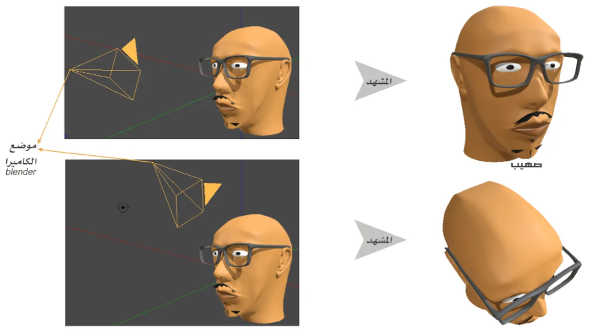
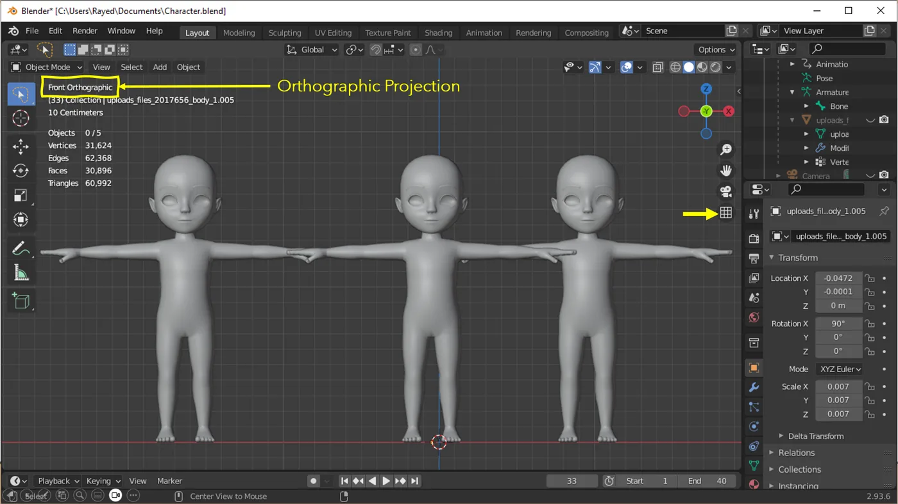
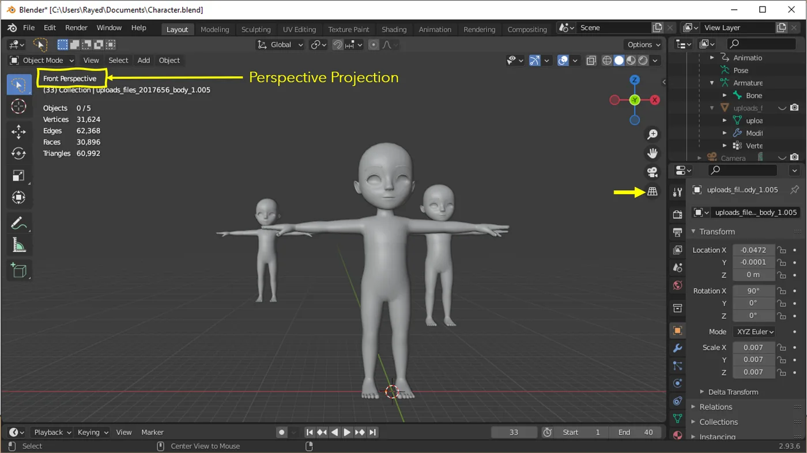
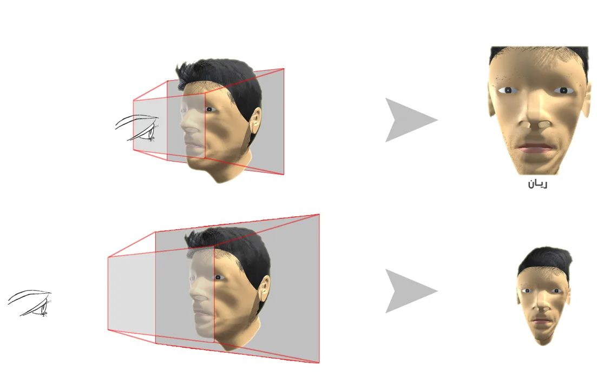

IT 280 · Computer Graphics and Multimedia · Week 10
Viewing, projection and a real OpenGL program
How a virtual camera sees: the view matrix, orthographic and perspective projection, the frustum and the perspective divide, and how all of it fits into a modern OpenGL program.
After this week you can
- Describe a virtual camera by eye, target and up, and explain the view transform.
- Compare orthographic and perspective projection and choose between them.
- Explain the frustum, field of view, aspect ratio and near and far planes.
- Explain the perspective divide, NDC and the viewport transform.
- Trace the full P · V · M chain for a vertex.
- Run and modify a shader-based OpenGL 3.3 core program.
بعد هذا الأسبوع ستكون قادرًا على أن:
- تصف الكاميرا الافتراضية بموضع العين والهدف والاتجاه العلوي، وتشرح تحويل العرض.
- تقارن الإسقاط المتعامد بالإسقاط المنظوري وتختار بينهما.
- تشرح مخروط الرؤية ومجال الرؤية ونسبة الأبعاد والمستويين القريب والبعيد.
- تشرح القسمة المنظورية وإحداثيات NDC وتحويل منفذ العرض.
- تتتبّع سلسلة P · V · M الكاملة لرأس.
- تشغّل برنامج OpenGL 3.3 أساسيًا قائمًا على المظلِّلات وتعدّله.
ترجمة عربية مساندة للشرح. المرجع هو النص الإنجليزي، وهو لغة الاختبارات والبرامج.
01 · The camera
A virtual camera: position, target and up
وضع الأسبوع التاسع الأجسام في العالم. ولنراها نحتاج إلى كاميرا افتراضية (virtual camera) تُوصف بثلاثة أشياء:
- العين (eye): موضع الكاميرا؛
- الهدف (target): النقطة التي تنظر إليها؛
- المتجه العلوي (up): أي اتجاه هو «الأعلى» للكاميرا، حتى لا تميل الصورة.
وخلافًا للكاميرا الحقيقية، لا قيود عدسة على الكاميرا الافتراضية: قد تكون متعامدة أو منظورية، وبأي مجال رؤية، وفي أي مكان. لكن وحدات GPU لا تحرّك كاميرا عبر العالم. بل يحرّك تحويل العرض العالم كله بحيث تقع الكاميرا عند الأصل ناظرةً على المحور −z. فتحريك الكاميرا 5 أمتار إلى الخلف هو نفسه تحريك العالم 5 أمتار إلى الأمام.
مصفوفة العرض هي معكوس مصفوفة نموذج الكاميرا: أيًّا كان التحويل الذي يضع الكاميرا في العالم، تفعل مصفوفة العرض عكسه بكل شيء آخر.
تحقّق من فهمك: في لعبة سباق تتبع الكاميرا السيارة. هل يحرّك المحرّك الكاميرا أم العالم أم كليهما؟
الإجابة: نظريًا يحرّك الكاميرا (يتبع تحويلها السيارة)، لكن في كل إطار تُعاد بناء مصفوفة العرض من تحويل الكاميرا وتُطبَّق على كل جسم. فعلى GPU العالم هو الذي يتحرك.
ترجمة عربية مساندة للشرح. المرجع هو النص الإنجليزي، وهو لغة الاختبارات والبرامج.
Week 9 placed objects in the world. To see them we need a virtual camera, described by three things:
- the eye: where the camera is;
- the target (centre): the point it looks at;
- the up vector: which way is “up” for the camera, so the picture is not tilted.
Unlike a real camera, a virtual one has no lens limits: it can be orthographic or perspective, any field of view, and anywhere. But GPUs do not move a camera through the world. Instead, the view transform moves the whole world so that the camera sits at the origin looking down the −z axis. Moving the camera 5 m backwards is the same as moving the world 5 m forwards.
The view matrix is the inverse of the camera’s own model matrix: whatever transform would place the camera in the world, the view matrix does the opposite to everything else.

In a racing game the camera follows the car. Does the engine move the camera, the world, or both?
Conceptually it moves the camera (its transform follows the car), but each frame the view matrix is rebuilt from that camera transform and applied to every object. On the GPU it is the world that moves.
02 · The view matrix
Building the view matrix with lookAt
تبني المكتبات مصفوفة العرض من العين والهدف والمتجه العلوي بدالة تُسمّى عادةً lookAt. وفي داخلها تحسب ثلاثة اتجاهات متعامدة للكاميرا، نظام إحداثياتها الصغير الخاص:
- الأمام f = normalise(target − eye): حيث تنظر الكاميرا؛
- اليمين r = normalise(f × up): الضرب الاتجاهي يعطي اتجاهًا عموديًا على الاثنين؛
- الأعلى الحقيقي u = r × f: عمودي على الآخرين.
ثم تدير مصفوفة العرض العالم بحيث تتطابق r وu و−f مع المحاور x وy وz، وتزيحه بـ−eye. ونادرًا ما ستكتب هذا بيدك: فـglm.lookAt(eye, target, up) في GLM، وTransform.LookAt في Unity، وقيد Track To في Blender كلها تفعله.
مثال محلول · أبسط كاميرا
- العين (0, 0, 5)، والهدف (0, 0, 0)، والأعلى (0, 1, 0).
- f = (0, 0, −1): الكاميرا تنظر أصلًا على −z، فلا حاجة إلى دوران.
- مصفوفة العرض = إزاحة بـ−eye = T(0, 0, −5).
- رأس عند الأصل ينتقل إلى (0, 0, −5) في فضاء الكاميرا: 5 وحدات أمام الكاميرا كما هو متوقع.
اختيار متجه علوي موازٍ لاتجاه النظر، مثل كاميرا تنظر مباشرة على المحور y مع up = (0, 1, 0). فيصبح الضرب الاتجاهي صفرًا وتتعطّل مصفوفة العرض. ولكاميرا تنظر من الأعلى استخدم up = (0, 0, −1).
ترجمة عربية مساندة للشرح. المرجع هو النص الإنجليزي، وهو لغة الاختبارات والبرامج.
Libraries build the view matrix from eye, target and up with a function usually called lookAt. Inside, it works out three perpendicular directions for the camera, its own small coordinate system:
- forward f = normalise(target − eye): where the camera looks;
- right r = normalise(f × up): the cross product gives a direction perpendicular to both;
- true up u = r × f: perpendicular to the other two.
The view matrix then rotates the world so that r, u and −f line up with the x, y and z axes, and translates it by −eye. You will almost never write this by hand: glm.lookAt(eye, target, up) in GLM, Transform.LookAt in Unity, and the Track To constraint in Blender all do it.
Worked example · the simplest camera
- Eye (0, 0, 5), target (0, 0, 0), up (0, 1, 0).
- f = (0, 0, −1): the camera already looks down −z, so no rotation is needed.
- View matrix = translation by −eye = T(0, 0, −5).
- A vertex at the origin goes to (0, 0, −5) in camera space: 5 units in front of the camera, as expected.
Choosing an up vector parallel to the viewing direction, for example a camera looking straight down the y-axis with up = (0, 1, 0). The cross product becomes zero and the view matrix breaks. For a top-down camera use up = (0, 0, −1).
03 · Projection
Orthographic and perspective projection
تحويل الإسقاط يسطّح مشهد فضاء الكاميرا الثلاثي نحو صورة ثنائية. وله نوعان:
- الإسقاط المتعامد (orthographic) يُسقط العمق دون تصغير أي شيء: تبقى الخطوط المتوازية متوازية، ويبقى الجسم بالحجم نفسه قريبًا أو بعيدًا. ويُستخدم للرسوم الهندسية، والتصميم بمساعدة الحاسب، ومخططات العمارة، والألعاب ثنائية الأبعاد، وواجهات المستخدم، والرسوم متساوية القياس في هذه الصفحات. ويُعرَّف بصندوق: يسار ويمين وأسفل وأعلى وقريب وبعيد.
- الإسقاط المنظوري (perspective) يجعل الأجسام البعيدة أصغر، كما تفعل العين والكاميرات الحقيقية؛ وتلتقي الخطوط المتوازية مثل قضبان السكة عند نقطة تلاشٍ. ويُستخدم كلما وجب أن يبدو المشهد حقيقيًا. ويُعرَّف بـمجال الرؤية (FOV) ونسبة الأبعاد للصورة والمسافتين القريبة والبعيدة.
وتعرض ملاحظات CPIT285 القديمة للرؤية النوعين بـglOrtho وgluPerspective. وفي الشيفرة الحديثة تأتي المصفوفات نفسها من glm.ortho(...) وglm.perspective(fov, aspect, near, far) وتُرسل إلى مظلِّل الرؤوس كمصفوفة النموذج.
تحقّق من فهمك: يريد معماري مخطط طابق يُرسم فيه كل جدار بمقياس صحيح. أي إسقاط، ولماذا؟
الإجابة: المتعامد: الأحجام لا تتغيّر مع المسافة، فتكون القياسات على الرسم صحيحة في كل مكان.
ترجمة عربية مساندة للشرح. المرجع هو النص الإنجليزي، وهو لغة الاختبارات والبرامج.
The projection transform flattens the 3D camera-space scene towards a 2D image. There are two kinds:
- Orthographic projection drops depth without shrinking anything: parallel lines stay parallel and an object is the same size near or far. It is used for technical drawings, CAD, architecture plans, 2D games, user interfaces and the isometric illustrations on these pages. It is defined by a box: left, right, bottom, top, near and far.
- Perspective projection makes distant objects smaller, as the eye and real cameras do; parallel lines such as railway tracks meet at a vanishing point. It is used whenever a scene should look real. It is defined by a field of view (FOV), the aspect ratio of the image, and near and far distances.
The old CPIT285 viewing notes show both with glOrtho and gluPerspective. In modern code the same matrices come from glm.ortho(...) and glm.perspective(fov, aspect, near, far) and are sent to the vertex shader, as with the model matrix.
Try it · projection explorer
Three equal cubes at different distances. Switch projection, change the field of view and move the camera.

An architect wants a floor plan where every wall is drawn to scale. Which projection, and why?
Orthographic: sizes do not change with distance, so measurements on the drawing are correct everywhere.
04 · The view volume
The view frustum, near and far planes
الكاميرا المنظورية ترى مخروط رؤية مقطوعًا (frustum): هرمًا رأسه عند العين وقمته مقطوعة. فـالمستوى القريب يقطع الرأس، والمستوى البعيد يغلق القاعدة، ومجال الرؤية يحدّد اتساع فتحته. وكل ما يقع خارجه يُقصّ (الأسبوع الثامن).
- مجال الرؤية. المجال الضيّق (20–30°) يعمل كعدسة مقرّبة: تبدو الأجسام البعيدة أكثر تسطّحًا وأقرب بعضها إلى بعض. والمجال الواسع (90° فأكثر) يعمل كعدسة واسعة الزاوية: يتسع لأشياء أكثر لكن الحواف تتمطّط. وتستخدم الألعاب عادةً 60–90°؛ ونظارات الواقع الافتراضي أوسع.
- نسبة الأبعاد يجب أن تطابق النافذة (العرض ÷ الارتفاع)، وإلا صارت الدوائر قطوعًا ناقصة. حدّثها كلما تغيّر حجم النافذة.
- القريب والبعيد. الأجسام الأقرب من المستوى القريب تُقطع، وتستطيع رؤية ذلك في العرض التفاعلي. لكن لا تجعل القريب صغيرًا جدًا احتياطًا: فدقة العمق موزّعة بشكل غير متساوٍ، ومركّزة قرب المستوى القريب، فالقيمة القريبة الصغيرة جدًا مع قيمة بعيدة ضخمة تسبّب تنازع العمق في البعيد (الأسبوع الثامن). اختر أكبر قيمة قريبة وأصغر قيمة بعيدة يتسع لهما المشهد.
استخدام near = 0.0001 وfar = 100,000 «حتى لا يُقصّ شيء أبدًا». فتومض الأسطح البعيدة متداخلة. استخدم مثلًا 0.1 للقريب و100 للبعيد في مشهد بحجم غرفة.
ترجمة عربية مساندة للشرح. المرجع هو النص الإنجليزي، وهو لغة الاختبارات والبرامج.
A perspective camera sees a frustum: a pyramid with its tip at the eye and its top cut off. The near plane cuts the tip, the far plane closes the base, and the field of view sets how wide it opens. Anything outside the frustum is clipped (Week 8).
- Field of view. A narrow FOV (20–30°) acts like a telephoto lens: distant objects look flatter and closer together. A wide FOV (90°+) acts like a wide-angle lens: more fits in, but edges stretch. Games commonly use 60–90°; VR headsets are wider.
- Aspect ratio must match the window (width ÷ height), or circles become ellipses. Update it whenever the window resizes.
- Near and far. Objects closer than the near plane are cut off, which you can see in the demo. But do not set near very small just to be safe: depth precision is spread unevenly, concentrated near the near plane, so a tiny near value with a huge far value causes z-fighting in the distance (Week 8). Choose the largest near and smallest far that still fit the scene.
Using near = 0.0001 and far = 100,000 “so nothing is ever clipped”. Distant surfaces then flicker through each other. Use, for example, near 0.1 and far 100 for a room-scale scene.

05 · Perspective divide
Why far things look smaller: the perspective divide
انظر إلى كاميرا الثقب: نقطة على ارتفاع y وبعد z تُسقَط على شاشة على بعد d عند الارتفاع y′ = d · y ÷ z. ضعف البعد يعني نصف الارتفاع. فالعملية الجوهرية قسمة على العمق.
والمصفوفة لا تستطيع إلا الضرب والجمع، لا القسمة. لذلك تستخدم مصفوفة المنظور الإحداثي المتجانس من الأسبوع التاسع: تنسخ العمق في w. وبعد مظلِّل الرؤوس تقسم GPU الإحداثيات x وy وz على w تلقائيًا، وهذه هي القسمة المنظورية (perspective divide):
(x, y, z, w) → (x/w, y/w, z/w)
والنتيجة في إحداثيات الجهاز المعيارية (NDC): كل ما هو مرئي يقع في مكعّب من −1 إلى +1 على كل محور، أيًّا كان حجم النافذة. ومع الإسقاط المتعامد يبقى w = 1، فلا يصغر شيء مع المسافة. وهذه هي الخطوة التي تحوّل فضاء القص (الأسبوع الثامن) إلى NDC.
مثال محلول · معادلة كاميرا الثقب
- عمودان، طول كل منهما 2 m، على بعد 4 m و8 m؛ وبعد الشاشة d = 1.
- العمود القريب: y′ = 1 × 2 ÷ 4 = 0.5.
- العمود البعيد: y′ = 1 × 2 ÷ 8 = 0.25: نصف الارتفاع على الشاشة.
- وتحقّق مصفوفة المنظور الشيء نفسه بجعل w = z وترك القسمة لـGPU.
ترجمة عربية مساندة للشرح. المرجع هو النص الإنجليزي، وهو لغة الاختبارات والبرامج.
Look at a pinhole camera: a point at height y and distance z projects onto a screen at distance d at height y′ = d · y ÷ z. Twice as far, half as tall. The essential operation is a division by depth.
A matrix can only multiply and add, not divide. The perspective matrix therefore uses the homogeneous coordinate from Week 9: it copies the depth into w. After the vertex shader, the GPU divides x, y and z by w automatically, the perspective divide:
(x, y, z, w) → (x/w, y/w, z/w)
The result is in normalised device coordinates (NDC): everything visible lies in a cube from −1 to +1 on each axis, whatever the window size. With orthographic projection w stays 1, so nothing shrinks with distance. This is the step that turns clip space (Week 8) into NDC.
Worked example · the pinhole formula
- Two posts, each 2 m tall, at distances 4 m and 8 m; screen distance d = 1.
- Near post: y′ = 1 × 2 ÷ 4 = 0.5.
- Far post: y′ = 1 × 2 ÷ 8 = 0.25: half the height on screen.
- The perspective matrix achieves the same by setting w = z and letting the GPU divide.
06 · Viewport
From NDC to pixels: the viewport transform
الخطوة الأخيرة تحوّل NDC (من −1 إلى +1) إلى إحداثيات بكسلات في النافذة، بمنفذ عرض x, y, width, height يضبطه glViewport (المعادلة في النص الإنجليزي).
ويُحوَّل العمق z أيضًا إلى المدى 0–1 ويُخزَّن في ذاكرة العمق. ويمكن لعدة منافذ عرض أن تقسم نافذة واحدة: لعبة بشاشة مقسومة، أو تخطيط المناظر الأربعة في Blender، لكل منها كاميرته.
وإذا اختلفت نسبة أبعاد الإسقاط عن عرض المنفذ ÷ ارتفاعه تمطّطت الصورة. وهي قاعدة نسبة الأبعاد نفسها في فيديو الأسبوع السادس، مفروضة الآن بالأرقام.
تحقّق من فهمك: نافذة 1920 × 1080 تعرض كرة على شكل بيضة بعد أن غيّر المستخدم حجمها إلى 1080 × 1080. ماذا نسي البرنامج؟
الإجابة: أن يحدّث نسبة الأبعاد في مصفوفة الإسقاط (ومنفذ العرض) عند تغيير الحجم: فهو ما زال يستخدم 16 : 9 لنافذة مربعة.
ترجمة عربية مساندة للشرح. المرجع هو النص الإنجليزي، وهو لغة الاختبارات والبرامج.
The last step maps NDC (−1 to +1) to pixel coordinates in the window. With a viewport x, y, width, height set by glViewport:
xpixel = (xndc + 1) ÷ 2 × width + x, ypixel = (yndc + 1) ÷ 2 × height + y
The depth zndc is also mapped, to the range 0–1, and stored in the depth buffer. Several viewports can split one window: a split-screen game, or Blender’s four-view layout, each with its own camera.
If the projection’s aspect ratio and the viewport’s width ÷ height disagree, the image is stretched. This is the same aspect-ratio rule as in Week 6 video, now enforced by numbers.
A 1920 × 1080 window shows a sphere as an egg after the user resizes it to 1080 × 1080. What did the program forget?
To update the aspect ratio in the projection matrix (and the viewport) on resize: it still uses 16 : 9 for a square window.
07 · Putting it together
Model, view, projection: the MVP chain
الأسابيع 8–10 معًا تعطي المسار الكامل لكل رأس:
gl_Position = P · V · M · v
- M (النموذج، الأسبوع 9): من فضاء النموذج إلى فضاء العالم.
- V (العرض، هذا الأسبوع): من فضاء العالم إلى فضاء الكاميرا.
- P (الإسقاط، هذا الأسبوع): من فضاء الكاميرا إلى فضاء القص.
- القسمة المنظورية في GPU: من فضاء القص إلى NDC.
- تحويل منفذ العرض: من NDC إلى بكسلات في ذاكرة الإطار.
اقرأ من اليمين إلى اليسار مرة أخرى. وكثيرًا ما تضرب البرامج P · V · M مرة واحدة على CPU وترسل مصفوفة MVP واحدة لكل جسم، لأنها نفسها لكل رؤوس ذلك الجسم. وهذا السطر الواحد قلب كل مظلِّل رؤوس في كل محرّك.
النموذج يضع الجسم، والعرض يضع الكاميرا، والإسقاط يختار العدسة. غيّر واحدًا منها فلا يتغيّر من الصورة إلا ذلك الجانب.
ترجمة عربية مساندة للشرح. المرجع هو النص الإنجليزي، وهو لغة الاختبارات والبرامج.
Weeks 8–10 together give the complete path of every vertex:
gl_Position = P · V · M · v
- M (model, Week 9): model space → world space.
- V (view, this week): world space → camera space.
- P (projection, this week): camera space → clip space.
- The GPU’s perspective divide: clip space → NDC.
- The viewport transform: NDC → pixels in the frame buffer.
Read right to left again. Programs often multiply P · V · M once on the CPU and send a single MVP matrix per object, because it is the same for all of that object’s vertices. That single line is the heart of every vertex shader in every engine.
Model places the object, view places the camera, projection chooses the lens. Change one and only that aspect of the picture changes.

08 · An OpenGL program
Anatomy of a minimal modern OpenGL program
كل برنامج OpenGL 3.3 أساسي، بلغة C++ أو Python، له البنية نفسها. ويستخدم اللاب Python مع حزم glfw (النافذة) وPyOpenGL (استدعاءات OpenGL) وPyGLM (رياضيات GLM)، لتركّز على الرسوميات لا على أدوات البناء؛ والاستدعاءات مطابقة لـC++.
- أنشئ نافذة وسياق OpenGL (GLFW)، واطلب الإصدار 3.3 بالملف الأساسي.
- ترجم المظلِّلات واربطها: مظلِّل رؤوس ومظلِّل قطع (الأسبوع الثامن) في برنامج واحد.
- ارفع الهندسة: انسخ مواضع الرؤوس وألوانها إلى كائن مخزن الرؤوس (VBO) في ذاكرة GPU؛ وصِف تخطيطه (أي البايتات موضع وأيها لون) في كائن مصفوفة الرؤوس (VAO)؛ وخزّن فهارس المثلثات في مخزن العناصر.
- فعّل الحالة مثل اختبار العمق.
- حلقة التصيير، مرة لكل إطار: امسح مخزني اللون والعمق؛ واحسب M وV وP؛ وأرسلها متغيّرات موحّدة؛ وارسم؛ وبدّل المخازن (التخزين المزدوج، الأسبوع الثاني)؛ وعالج أحداث الإدخال.
والبرنامج الابتدائي الكامل للاب في النص الإنجليزي. اقرأه وهذه القائمة بجانبك: كل سطر فيه ينتمي إلى إحدى الخطوات الخمس.
اتباع شرح يستخدم glBegin أو glVertex أو gluPerspective. فهذه تنتمي إلى OpenGL القديمة ثابتة الوظائف وتفشل في سياق الملف الأساسي. ابحث عن «OpenGL 3.3 core» أو موقع LearnOpenGL.
ترجمة عربية مساندة للشرح. المرجع هو النص الإنجليزي، وهو لغة الاختبارات والبرامج.
Every OpenGL 3.3 core program, in C++ or Python, has the same structure. The lab uses Python with the glfw (window), PyOpenGL (OpenGL calls) and PyGLM (GLM maths) packages, so you can focus on graphics rather than build tools; the calls are identical to C++.
- Create a window and an OpenGL context (GLFW), requesting version 3.3, core profile.
- Compile and link shaders: a vertex and a fragment shader (Week 8) into a program.
- Upload geometry: copy vertex positions and colours into a vertex buffer object (VBO) in GPU memory; describe its layout (which bytes are position, which are colour) in a vertex array object (VAO); store triangle indices in an element buffer.
- Enable state such as the depth test.
- Render loop, once per frame: clear the colour and depth buffers; compute M, V and P; send them as uniforms; draw; swap buffers (double buffering, Week 2); process input events.
The full starter program for the lab is below. Read it with this list beside you: every line belongs to one of the five steps.
Show the Lab 10 starter program (main.py, 72 lines)
import ctypes, glfw, glm, numpy as np
from OpenGL.GL import *
VS = """
#version 330 core
layout(location = 0) in vec3 aPos;
layout(location = 1) in vec3 aColor;
uniform mat4 uModel, uView, uProj;
out vec3 vColor;
void main() {
gl_Position = uProj * uView * uModel * vec4(aPos, 1.0);
vColor = aColor;
}
"""
FS = """
#version 330 core
in vec3 vColor;
out vec4 FragColor;
void main() { FragColor = vec4(vColor, 1.0); }
"""
def compile_program():
def sh(src, kind):
s = glCreateShader(kind); glShaderSource(s, src); glCompileShader(s)
if not glGetShaderiv(s, GL_COMPILE_STATUS): raise RuntimeError(glGetShaderInfoLog(s).decode())
return s
p = glCreateProgram()
glAttachShader(p, sh(VS, GL_VERTEX_SHADER)); glAttachShader(p, sh(FS, GL_FRAGMENT_SHADER))
glLinkProgram(p)
if not glGetProgramiv(p, GL_LINK_STATUS): raise RuntimeError(glGetProgramInfoLog(p).decode())
return p
# a unit cube: 8 corners with colours, 12 triangles (36 indices)
V = np.array([
-.5,-.5,-.5, .17,.36,.79, .5,-.5,-.5, .17,.36,.79, .5,.5,-.5, .89,.63,.29, -.5,.5,-.5, .89,.63,.29,
-.5,-.5, .5, .08,.13,.23, .5,-.5, .5, .08,.13,.23, .5,.5, .5, .95,.96,.97, -.5,.5, .5, .95,.96,.97], dtype=np.float32)
I = np.array([0,1,2, 2,3,0, 4,5,6, 6,7,4, 0,4,7, 7,3,0, 1,5,6, 6,2,1, 3,2,6, 6,7,3, 0,1,5, 5,4,0], dtype=np.uint32)
def main():
glfw.init()
glfw.window_hint(glfw.CONTEXT_VERSION_MAJOR, 3); glfw.window_hint(glfw.CONTEXT_VERSION_MINOR, 3)
glfw.window_hint(glfw.OPENGL_PROFILE, glfw.OPENGL_CORE_PROFILE)
glfw.window_hint(glfw.OPENGL_FORWARD_COMPAT, True) # needed on macOS
win = glfw.create_window(960, 540, "IT280 Lab 10", None, None)
glfw.make_context_current(win)
prog = compile_program()
vao = glGenVertexArrays(1); glBindVertexArray(vao)
vbo = glGenBuffers(1); glBindBuffer(GL_ARRAY_BUFFER, vbo); glBufferData(GL_ARRAY_BUFFER, V.nbytes, V, GL_STATIC_DRAW)
ebo = glGenBuffers(1); glBindBuffer(GL_ELEMENT_ARRAY_BUFFER, ebo); glBufferData(GL_ELEMENT_ARRAY_BUFFER, I.nbytes, I, GL_STATIC_DRAW)
stride = 6 * 4
glVertexAttribPointer(0, 3, GL_FLOAT, GL_FALSE, stride, ctypes.c_void_p(0)); glEnableVertexAttribArray(0)
glVertexAttribPointer(1, 3, GL_FLOAT, GL_FALSE, stride, ctypes.c_void_p(12)); glEnableVertexAttribArray(1)
glEnable(GL_DEPTH_TEST)
loc = {n: glGetUniformLocation(prog, n) for n in ("uModel", "uView", "uProj")}
while not glfw.window_should_close(win):
w, h = glfw.get_framebuffer_size(win); glViewport(0, 0, w, h)
glClearColor(0.96, 0.97, 0.97, 1); glClear(GL_COLOR_BUFFER_BIT | GL_DEPTH_BUFFER_BIT)
t = glfw.get_time()
model = glm.rotate(glm.mat4(1), t, glm.vec3(0.3, 1, 0)) # M
view = glm.lookAt(glm.vec3(0, 1.5, 4), glm.vec3(0, 0, 0), glm.vec3(0, 1, 0)) # V
proj = glm.perspective(glm.radians(45), w / max(h, 1), 0.1, 100) # P
glUseProgram(prog)
for name, mtx in (("uModel", model), ("uView", view), ("uProj", proj)):
glUniformMatrix4fv(loc[name], 1, GL_FALSE, glm.value_ptr(mtx))
glBindVertexArray(vao); glDrawElements(GL_TRIANGLES, len(I), GL_UNSIGNED_INT, None)
glfw.swap_buffers(win); glfw.poll_events()
glfw.terminate()
if __name__ == "__main__":
main()
Following a tutorial that uses glBegin, glVertex or gluPerspective. Those belong to the old fixed-function OpenGL and fail in a core-profile context. Look for “OpenGL 3.3 core” or LearnOpenGL.
09 · Cameras in tools
Cameras in Blender and Unity
تعرض المحرّكات وأدوات الأبعاد الثلاثة إعدادات الكاميرا نفسها بأسماء فوتوغرافية:
- Blender: كائن كاميرا (تحويله هو العين والاتجاه) مع Lens › Type منظوري أو متعامد، وFocal Length بالملّيمتر (50 mm على المستشعر الافتراضي 36 mm ≈ مجال رؤية أفقي 39.6°؛ والبعد البؤري الأقصر = رؤية أوسع)، وClip Start / End (القريب والبعيد).
- Unity: مكوّن Camera فيه Projection (منظوري أو متعامد)، وField of View (رأسي، بالدرجات)، وClipping Planes القريب والبعيد، وViewport Rect للشاشات المقسومة.
والبعد البؤري الأقصر يعني مجال رؤية أوسع؛ ومضاعفة البعد البؤري تنصّف مجال الرؤية تقريبًا. وأيًّا كانت الواجهة، يبني المحرّك مصفوفتي العرض والإسقاط نفسيهما اللتين تبنيهما بيدك في اللاب.
تحقّق من فهمك: في Unity كاميرا منظور الشخص الأول فيها Near = 0.3. ونموذج سلاح اللاعب على بعد 0.2 m أمام الكاميرا ويختفي جزئيًا. لماذا، وما حلّان؟
الإجابة: أجزاء من السلاح أقرب من المستوى القريب فتُقصّ. اخفض القيمة القريبة (مثلًا 0.05، مع قبول بعض الخسارة في دقة العمق) أو حرّك النموذج إلى الأمام؛ وكثير من الألعاب ترسم السلاح بكاميرا منفصلة.
ترجمة عربية مساندة للشرح. المرجع هو النص الإنجليزي، وهو لغة الاختبارات والبرامج.
Engines and 3D tools expose the same camera settings with photographic names:
- Blender: a Camera object (its transform is the eye and direction) with Lens › Type Perspective or Orthographic, Focal Length in millimetres (50 mm on Blender’s default 36 mm sensor ≈ 39.6° horizontal FOV; shorter focal length = wider view) and Clip Start / End (near and far).
- Unity: a Camera component with Projection (Perspective or Orthographic), Field of View (vertical, in degrees), Clipping Planes Near and Far, and a Viewport Rect for split screens.
A shorter focal length means a wider field of view; doubling the focal length roughly halves it. Whatever the interface, the engine builds the same view and projection matrices you build by hand in the lab.
In Unity a first-person camera has Near = 0.3. The player’s gun model is 0.2 m in front of the camera and partly disappears. Why, and what are two fixes?
Parts of the gun are closer than the near plane and are clipped. Lower Near (for example 0.05, accepting some depth-precision cost) or move the gun model further forward; many games also draw the weapon with a separate camera.
Submit your group’s one-page proposal for the interactive multimedia application (Group Project, 15%) on Blackboard this week: idea, target users, the assets you will create or license, and who does what. The prototype is due in Week 13 and the demonstration in Week 15.
Summary
What to remember
الأسبوع العاشر في ثماني نقاط
- الكاميرا عين وهدف ومتجه علوي؛ ومصفوفة العرض تحرّك العالم بحيث تقع الكاميرا عند الأصل ناظرةً على −z.
- lookAt تبني مصفوفة العرض من متجهات الأساس: الأمام واليمين والأعلى.
- الإسقاط المتعامد يحافظ على الأحجام؛ والمنظوري يصغّر الأجسام البعيدة ويستخدم مجال رؤية ونسبة أبعاد ومستويين قريبًا وبعيدًا.
- مخروط الرؤية المنظوري: اجعل القريب أكبر ما يمكن والبعيد أصغر ما يمكن ليتسع المشهد، تجنّبًا لتنازع العمق.
- الإسقاط المنظوري يضع العمق في w؛ والقسمة المنظورية في GPU تعطي NDC من −1 إلى 1.
- منفذ العرض يحوّل NDC إلى بكسلات؛ واجعل نسبة أبعاد الإسقاط مساوية لنسبة أبعاد المنفذ.
- gl_Position = P · V · M · v: النموذج، فالعرض، فالإسقاط، من اليمين إلى اليسار.
- برنامج OpenGL الأساسي: السياق، والمظلِّلات، وVBO/VAO، والحالة، وحلقة التصيير بالمتغيّرات الموحّدة، ثم الرسم والتبديل.
ترجمة عربية مساندة للشرح. المرجع هو النص الإنجليزي، وهو لغة الاختبارات والبرامج.
Week 10 in eight points
- A camera is an eye, a target and an up vector; the view matrix moves the world so the camera sits at the origin looking down −z.
- lookAt builds the view matrix from forward, right and up basis vectors.
- Orthographic projection keeps sizes; perspective shrinks distant objects and uses a FOV, an aspect ratio, and near and far planes.
- The perspective frustum: keep near as large and far as small as the scene allows, to avoid z-fighting.
- Perspective projection puts depth in w; the GPU’s perspective divide gives NDC from −1 to 1.
- The viewport maps NDC to pixels; keep the projection’s aspect ratio equal to the viewport’s.
- gl_Position = P · V · M · v: model, view, projection, read right to left.
- A core OpenGL program: context, shaders, VBO/VAO, state, render loop with uniforms, draw and swap.
Before the quiz
Common mistakes to avoid
| Mistake | Why it is wrong | Do this instead |
|---|---|---|
| Up vector parallel to the view direction | Cross product is zero; view breaks | Choose a different up for top-down cameras |
| Not updating the aspect ratio on resize | Stretched image | Recompute P with width ÷ height each frame |
| Huge far / tiny near planes | Z-fighting in the distance | Tight near and far for the scene |
| Multiplying M · V · P in the wrong order | Garbage positions | P · V · M · v, right to left |
| Fixed-function code in a core context | Functions do not exist; crash or black screen | Shaders and GLM only |
| Forgetting glEnable(GL_DEPTH_TEST) or clearing the depth buffer | Back faces show through front faces | Enable the test and clear depth every frame |
Check yourself
6 questions, marked on the page
Lab 10
A shader-based OpenGL program: camera and projection
في هذا اللاب تشغّل برنامج OpenGL حديثًا كاملًا وتعدّله: خط المعالجة نفسه الذي درسته في الأسابيع 8–10، لكن بالشيفرة. تتحكم في الكاميرا، وتبدّل الإسقاطات، وترسم عدة أجسام لكل منها مصفوفة نموذج.
| ما تحتاجه | VS Code مع إضافة Python، وPython 3.10 أو أحدث، واتصال بالإنترنت لتثبيت أربع حزم. والبرنامج الابتدائي في القسم 08 وعلى Blackboard. |
| ما ستسلّمه | رابط مستودعك، وفيه labs/lab10/main.py وnotes.md ولقطات الشاشة. |
| التقييم | جدول التقييم في نهاية القسم (10 درجات، CLO 1.2). |
أجزاء اللاب
الجزء A · جهّز Python وVS Code والبرنامج الابتدائي (15 دقيقة)
ثبّت الحزم الأربع بأمر pip واحد، وانسخ البرنامج الابتدائي إلى main.py وشغّله.
نقطة التحقق: البرنامج يعمل ويعرض المكعّب الدوّار.
الجزء B · اقرأ البرنامج (15 دقيقة)
علّق على كل جزء باسم خطوته من القسم 08، وحدّد أسطر M وV وP، وأوقف اختبار العمق مؤقتًا لترى أثره.
نقطة التحقق: برنامج معلَّق عليه وملاحظات عن M وV وP واختبار العمق.
الجزء C · حرّك الكاميرا (20 دقيقة)
غيّر موضع العين، ثم اجعل الكاميرا تدور حول المكعّب بمفاتيح الأسهم، وأوقف دوران المكعّب لترى أن تحريك الكاميرا يشبه تدوير الجسم.
نقطة التحقق: كاميرا تدور بمفاتيح الأسهم.
الجزء D · غيّر الإسقاط (20 دقيقة)
جرّب مجالات رؤية 20 و45 و90، وأضف إسقاطًا متعامدًا بالمفتاح O، وجرّب قصّ المستوى القريب وأثر نسبة الأبعاد الخاطئة، مع لقطات وملاحظات.
نقطة التحقق: لقطات وملاحظات عن مجال الرؤية والإسقاط المتعامد والمستوى القريب ونسبة الأبعاد.
الجزء E · عدة أجسام وكاميرا واحدة (15 دقيقة)
ارسم ثلاثة مكعّبات بمصفوفات نموذج مختلفة، واجعل مكعّبًا صغيرًا يدور حول الأوسط بضرب مصفوفة الأب في المحلية (الأسبوع 9).
نقطة التحقق: عدة مصفوفات نموذج مع عرض وإسقاط واحدين.
الجزء F · احفظ وسلّم (5 دقيقة)
احفظ التغييرات وارفعها، وسلّم الرابط على Blackboard.
اقرأ هدف كل جزء هنا بالعربية، ثم نفّذ الخطوات المرقّمة بالإنجليزية كما هي، لأن أسماء القوائم والأزرار في البرامج بالإنجليزية. إذا تعثّرت فابقَ في وقت الدعم (آخر 30 دقيقة) ليساعدك المحاضر.
ترجمة عربية مساندة للشرح. المرجع هو النص الإنجليزي، وهو لغة الاختبارات والبرامج.
In this lab you run and modify a complete modern OpenGL program: the same pipeline you studied in Weeks 8–10, now in code. You control the camera, switch projections and draw several objects, each with its own model matrix.
The program uses OpenGL 3.3 core with GLSL 330 through Python. The same calls exist in C++ (GLFW, GLAD and GLM) if you want to continue in C++ later.
Part A · Set up Python, VS Code and the starter
15 min- Open VS Code. If the Python extension is not installed, install it from the Extensions view (Ctrl + Shift + X, search “Python”, publisher Microsoft).
- Open your repository folder (), then and run:
python -m pip install glfw PyOpenGL PyGLM numpy
four packages installed without errors. - Create and paste the starter program from section 08 (also on Blackboard). Save.
- Run it from the terminal:
python labs/lab10/main.py.a window with a slowly rotating cube in blue, amber, ink and white.
Checkpoint. The starter program runs and shows the rotating cube.
Part B · Read the program
15 min- Add a comment above each block naming its step from section 08: context, shaders, buffers, state, render loop.
- Find the three matrices. In labs/lab10/notes.md write which line builds M, V and P, and which line in the vertex shader combines them.
- Comment out
glEnable(GL_DEPTH_TEST)and run again. Describe what goes wrong and why (Week 8). Restore it.faces showing through each other.
Checkpoint. An annotated program and notes on M, V, P and the depth test.
Part C · Move the camera
20 min- Change the eye in glm.lookAt to (3, 3, 3). Run and describe the new view.
- Make the camera orbit with the arrow keys. Before the loop add
angle = 0.0; inside the loop, before building the view, add:if glfw.get_key(win, glfw.KEY_LEFT) == glfw.PRESS: angle -= 0.02 if glfw.get_key(win, glfw.KEY_RIGHT) == glfw.PRESS: angle += 0.02 eye = glm.vec3(4 * glm.sin(angle), 1.5, 4 * glm.cos(angle))
and useeyein lookAt.the cube seen from all sides as you hold the keys. - Stop the cube spinning (use glm.mat4(1) as the model) so only the camera moves. In notes.md explain why orbiting the camera looks like spinning the object.
Checkpoint. An orbiting camera controlled by the arrow keys.
Part D · Change the projection
20 min- Try field-of-view values 20, 45 and 90. Take a screenshot of each into labs/lab10/.
- Add an orthographic option: when the O key is held, use
a = w / max(h, 1) proj = glm.ortho(-2 * a, 2 * a, -2, 2, 0.1, 100)
instead of glm.perspective. Compare.parallel edges stay parallel; no change in size with distance. - Set near to 3.5 and move the camera close. Watch the cube get cut. Restore 0.1.
- Replace
w / max(h, 1)with 1.0 in the perspective call. The cube stretches. Restore it, and explain in notes.md.
Checkpoint. Screenshots and notes on FOV, orthographic, near plane and aspect ratio.
Part E · Several objects, one camera
15 min- Draw three cubes: in the loop, for x in (-2, 0, 2), build
model = glm.translate(glm.mat4(1), glm.vec3(x, 0, 0)), send it, and call glDrawElements.three cubes in a row; in perspective, side cubes show their sides. - Make a small cube orbit the middle one (Week 9 hierarchy):
parent = glm.rotate(glm.mat4(1), t, glm.vec3(0, 1, 0));child = parent * glm.translate(glm.mat4(1), glm.vec3(1.5, 0, 0)) * glm.scale(glm.mat4(1), glm.vec3(0.3)).a small cube circling the centre cube.
Checkpoint. Multiple model matrices with one view and projection.
Part F · Commit and submit
5 min- Commit , push, and submit the link on Blackboard.
Minutes 90–120 are support time. If you are not finished, stay: the instructor works with you one-to-one until you submit. If you are finished, check a classmate’s work against the rubric below, then you may leave.
Before you submit
The ticks stay on this page only; they are for you.
If something goes wrong
| Problem | Why it happens | Fix |
|---|---|---|
| “python is not recognized” | Python not on the PATH | Use py instead of python on Windows, or reinstall Python with “Add to PATH” ticked |
| glfw.init fails or no window | GLFW library missing | pip install --upgrade glfw (the wheel includes the library on Windows and macOS) |
| Shader compile error printed | Typo in GLSL | Read the line number in the message; GLSL needs semicolons and matching names |
| Black window | Matrices not sent or camera inside the cube | Check uniform names match the shader; move the eye back |
| Version error on macOS | Core profile needs forward compatibility | Keep the OPENGL_FORWARD_COMPAT hint from the starter |
Rubric (10 points)
| Criterion | Full (2) | Partial (1) | Missing (0) |
|---|---|---|---|
| Program runs and is annotated | Runs; every block labelled with its step | Runs with few comments | Missing |
| Understanding M, V, P and depth | Correct lines identified; depth-test effect explained | Partly correct | Missing |
| Camera control | Arrow-key orbit works; explanation given | Static camera change only | Missing |
| Projection experiments | FOV, orthographic, near and aspect explored with screenshots and notes | Some experiments | Missing |
| Multiple objects | Three cubes plus an orbiting child using parent · local | Three cubes only | Missing |
Glossary · المصطلحات
Key terms in English and Arabic
| English | Meaning | العربية |
|---|
Sources
Sources for this week
- Marschner, S., & Shirley, P. (2021). Fundamentals of Computer Graphics (5th ed.). CRC Press. Viewing transformations, projection and the perspective divide.
- de Vries, J. LearnOpenGL: Coordinate Systems, Camera, Hello Triangle. learnopengl.com.
- AlGhamdi, R. (2022). CPIT285 Lectures 5–6 (Graphics API, Introduction to OpenGL) and 8 (Viewing Transformation), King Abdulaziz University. Updated here from glOrtho/gluPerspective to the core profile with GLM.
- Zuzu-Typ. PyGLM (glm.lookAt, glm.perspective, glm.value_ptr). github.com/Zuzu-Typ/PyGLM. Example of PyGLM with PyOpenGL uniforms: Thormählen, T., ShaderTexture.py, Philipps-Universität Marburg.
- GLFW and pyGLFW; PyOpenGL. glfw.org; pypi.org/project/PyOpenGL. The starter program was tested in an OpenGL 4.5 core-profile context (Mesa) on 18 November 2026.
- Blender Foundation. Blender 4.x Manual: Cameras (lens, focal length, clipping). Unity Technologies. Unity Manual: Camera component.
- Illustrations: the projection explorer is computed by this page.
Authorship and AI use for all course pages are declared on the course home page.